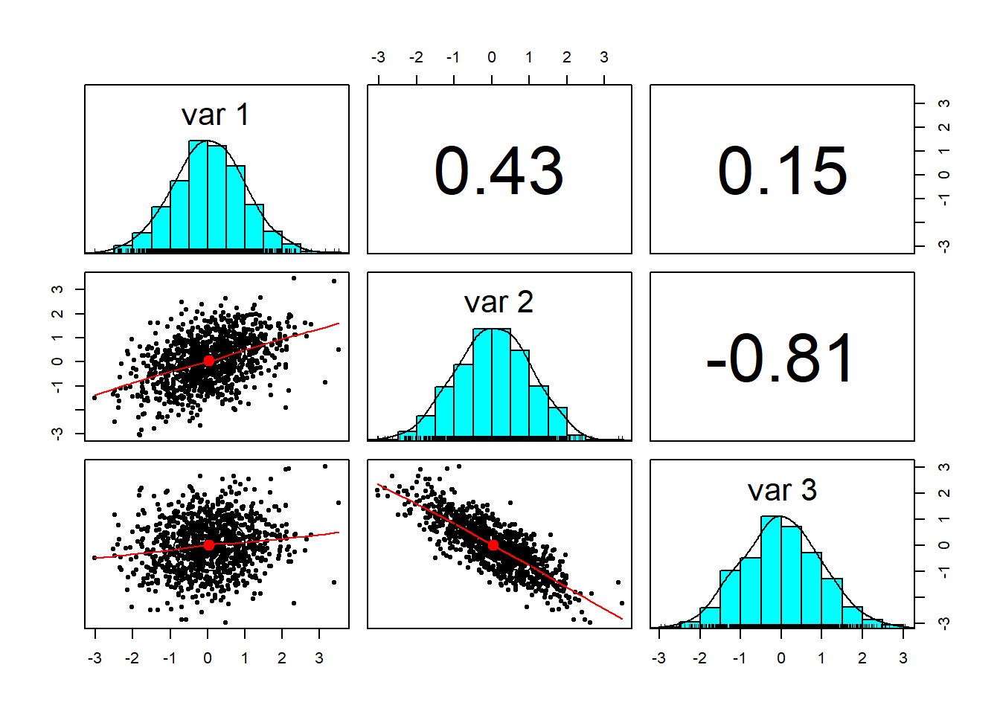
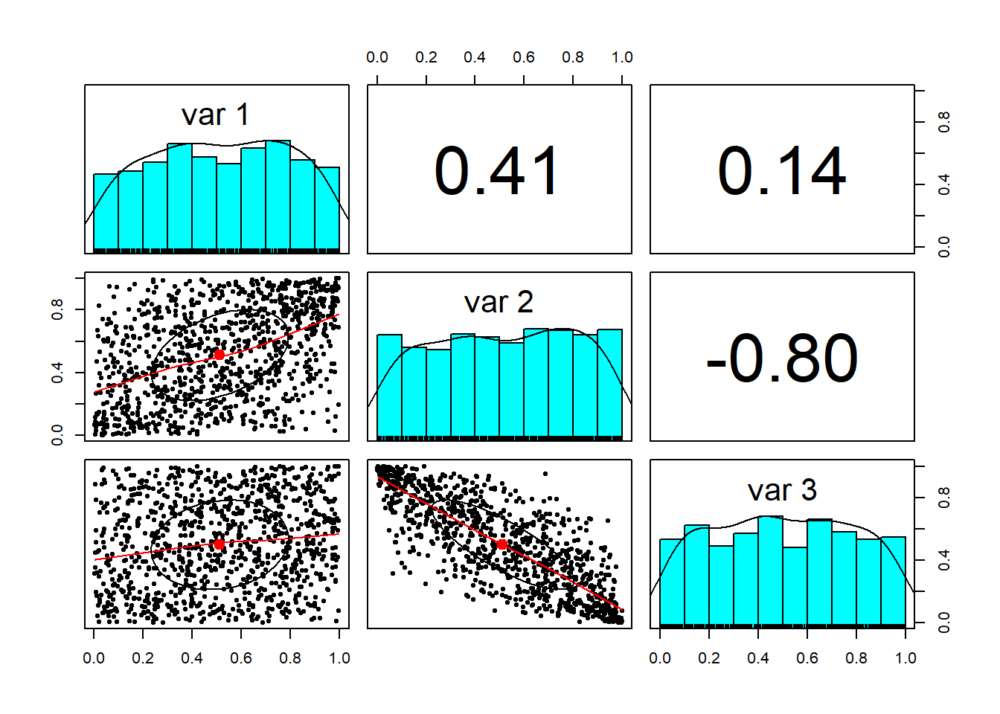
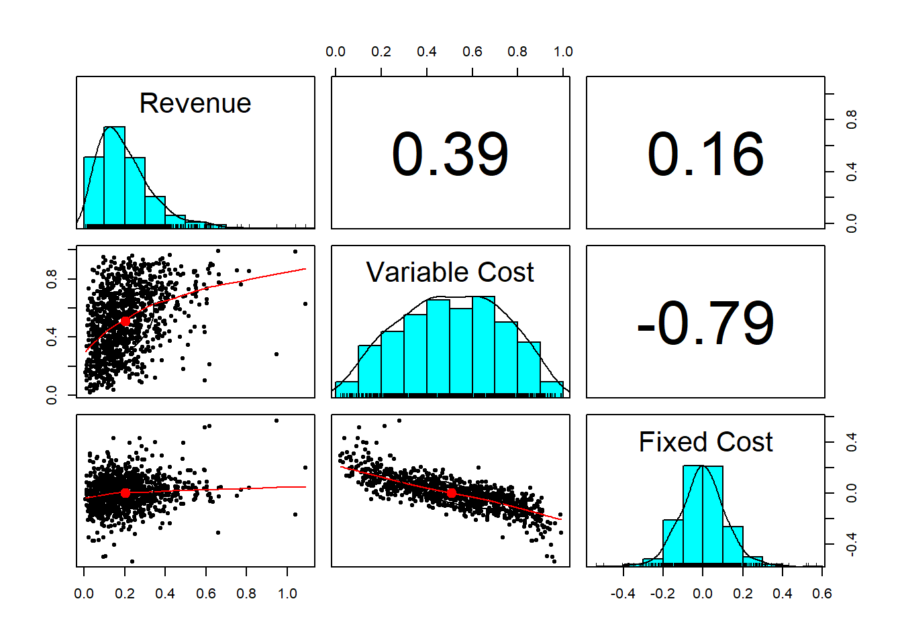
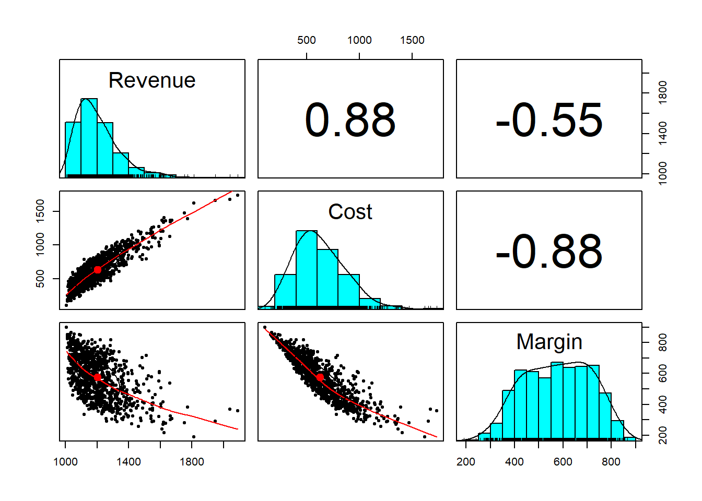
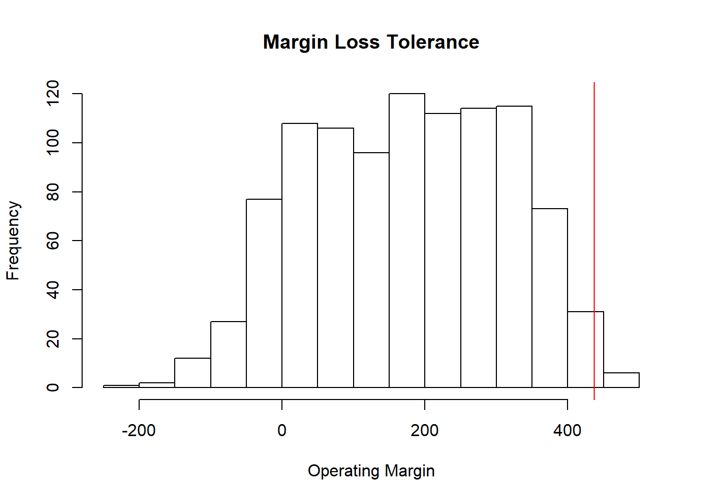
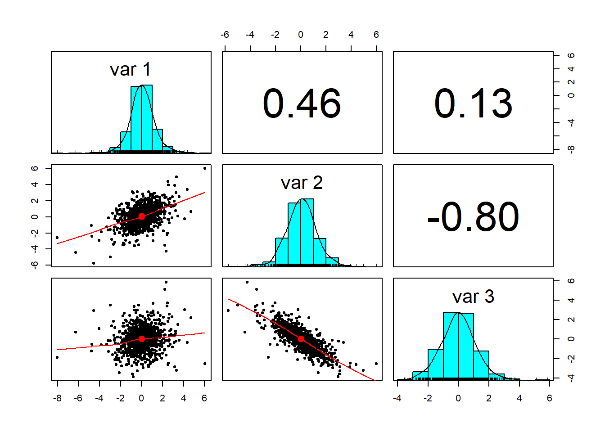
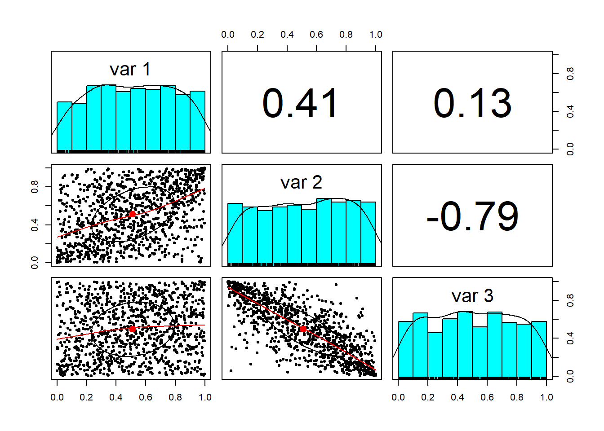
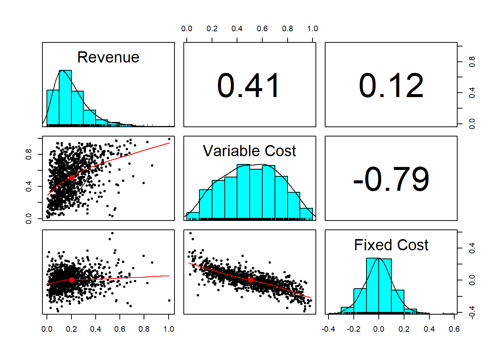
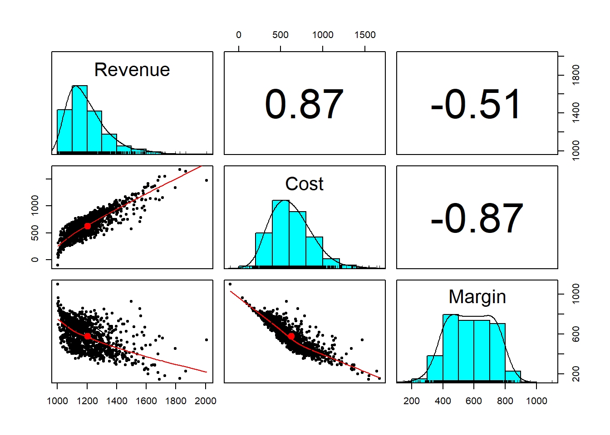

Chapter 7 Aggregating Enterprise Risk
7.1 The Problem with Enterprise Risk
International Mulch & Compost Company\footnote(IM&C os a ficitious company dreamt up and used by Brealey and Myers.) makes and distributes an emerging energy source made from guano and prairie grass briquets. IM&C is about to go IPO. Corporate policy dictates that management must assess risks to equity annually and whether a circumstance dictates. Such a circumstance is an IPO.
Management knows of at least three material risks:
- Customers defect so there is uncertainty in revenue growth.
- Suppliers stop competing on price, quantity, and quality so there is uncertainty in variable expense.
- There are major compliance breaches which impact fixed expense.
No one knows much about these risks from history because this company is the first in its market to produce this very innovative product from bio-engineered guano. Very abundant prairie grass grows alongside every highway in North America. Management does have considerable experience in marketing, production, and operations. IM&C ponders its SEC disclosure for the IPO where it will report its view of material risks. One question management knows someone will ask is how likely is it that the net operating margin will fall below, say, indicated earnings of $400 million. IM&C thinks it needs to know how much capital is involved in this risk venture.
7.2 Let’s make copulas
Our problem is:
- We have three major risk factors and each has their own distribution.
- We also know that they are somehow correlated.
- How can we aggregate the three into one risk measure that is tangible, and preserve the correlation?
7.2.1 We do this from scratch.
Our first task is to generate multivariate normal variates that are correlated with one another. Here we relate three standard normal random variables together.A standard normal random variable has a mean, \(\mu = 0\), and variance, \(\sigma^2 = 1\). The variable sigma in the code below is the correlation matrix.
library(mvtnorm)
set.seed(1016)
n.risks <- 3 ## Number of risk factors
m <- n.risks
n.sim <- 1000
sigma <- matrix(c(1, 0.4, 0.2,
0.4, 1, -0.8,
0.2, -0.8, 1),
nrow=3)
z <- rmvnorm(n.sim, mean=rep(0, nrow(sigma)),sigma = sigma, method = "svd") In the rmvnorm function svd stands for the “singular value decomposition” that allows us to fan the correlations across the z values.
7.2.2 Example
Let’s use the .panels feature in the psych library to look at the variates so far. We also calculate two kinds of correlations, Spearman and Pearson.
## [,1] [,2] [,3]
## [1,] 1.000 0.408 0.139
## [2,] 0.408 1.000 -0.801
## [3,] 0.139 -0.801 1.000## [,1] [,2] [,3]
## [1,] 1.000 0.426 0.152
## [2,] 0.426 1.000 -0.811
## [3,] 0.152 -0.811 1.000
Here is the result.
## [,1] [,2] [,3]
## [1,] 1.000 0.408 0.139
## [2,] 0.408 1.000 -0.801
## [3,] 0.139 -0.801 1.000## [,1] [,2] [,3]
## [1,] 1.000 0.426 0.152
## [2,] 0.426 1.000 -0.811
## [3,] 0.152 -0.811 1.000
Notice how close the correlations are to the ones we specified in sigma.
7.3 Sklar’s in the house…
Next we use a result from mathematical probability called
Sklar’s theorem (1959):
- If \(x\) is a random variable with distribution \(F\),
- then \(F(x)\) is uniformly distributed in the interval \([0, 1]\).
Let’s translate this idea into R and look at the resulting interactions.

We see that the Gaussian (normal) distribution has been reshaped into a uniform distribution, just as Sklar predicted. The idea around this theorem is the same as around the number 1. We can multiply any real number by one and get the real number back. This is an identity operation. (Please remember we are not trying to be mathematicians! My apologies to the mathematical community.) In a somewhat analogous way, the uniform distribution serves a role as an distribution identity operator.When we operate on the uniformly distributed random numbers with a distribution, we get back that distribution. But in this case the identity distribution has structure in it (correlations) that the new distribution inherits.
A 3-D plot looks more interesting. In the Rstudio graphics device window we can the roll the cube around to see into the relationships among the random variables. Try this at home for an interactive experience.
Now, we only need to select the marginal probabilities of the risks we are assessing and apply them to the dependently related ‘u’ variates. Suppose the marginal probability distributions for revenue growth is gamma, variable expense ratio is beta, and the fixed expense ratio is Student’s t distributed with these parameters:
Nice outliers! Starting from a multivariate normal distribution we created dependent uniform variates. Using the dependent uniform variates we created dependent distributions of our choosing.
factors.df <- cbind(x1/10,x2,x3/10)
colnames(factors.df) <- c("Revenue", "Variable Cost", "Fixed Cost")
pairs.panels(factors.df)
## Revenue Variable Cost Fixed Cost
## Revenue 1.000 0.408 0.139
## Variable Cost 0.408 1.000 -0.801
## Fixed Cost 0.139 -0.801 1.0007.4 Analyze that…
Now to use all of this simulation to project revenue, expense, and margin.
revenue <- 1000*(1+factors.df[,1])
variable.cost <- revenue * factors.df[,2]
fixed.cost <- revenue * factors.df[,3]
total.cost <- variable.cost + fixed.cost
operating.margin <- revenue - variable.cost - fixed.cost
analysis <- cbind(revenue,total.cost,operating.margin)
colnames(analysis) <- c("Revenue", "Cost", "Margin")7.4.1 Example
Run pairs.panels using the analysis data frame. What do you see?
Here’s the result.

What do we see?
- Variable and fixed cost aggregate into a distribution that is right-skewed.
- Margin has a high density across a broad range of potential outcomes.
- An increase (decrease) in cost will probably result in an increase (decrease) in revenue.
- Revenue and margin also seem to be counter cyclical, a non-intuitive result, but one that makes sense only by looking at the negative correlation between cost and margin.
7.5 Risk measures
We are not yet done. The whole point of this analysis is to get consistent and coherent measures of risk to a consumer of the analysis, namely, the decision maker who is the CFO in this case. We define the value at risk, \(VaR\), as the \(\alpha\) quantile of the performance metric of interest. Higher \(\alpha\) means lower risk tolerance. Here is the relationship: \[ Q(x,\alpha) = F(x; Prob[X] > \alpha). \] The metric \(x\) in this case is margin. Expected Shortfall, \(ES\), is then the mean of the margin beyond \(VaR\). The parameter \(\alpha\) is the level of organizational risk tolerance. If \(\alpha = 0.99\), then the organization would want risk capital to cover a potential loss of \(VaR\), and more conservatively, \(ES\). The organization is even more conservative the higher the \(\alpha\).
We purloin the R code from the market risk material here:
### Simple Value at Risk
expected.margin <- 400
## Center margin loss on expected margin
loss.rf <- -(expected.margin - operating.margin)
## Assign metric of interest to reusable code
summary(loss.rf) ## Min. 1st Qu. Median Mean 3rd Qu. Max.
## -211 63 180 176 290 499## Always review a key variable's content
alpha.tolerance <- .99
## Very intolerant!
## Remember that putting a variable assignment in parentheses also prints the result
(VaR.hat <- quantile(loss.rf, probs=alpha.tolerance, names=FALSE))## [1] 437## [1] 456Let’s plot the results.
hist(loss.rf, xlab = "Operating Margin", ylab = "Frequency", main = "Margin Loss Tolerance")
abline(v = VaR.hat, col = "red")
Sklar provides us with a way to join together any set of distributions. It transforms correlated variates into a uniform distribution. The uniform distribution takes on the role of the number 1 in algebra. Anything multiplied by 1 returns itself. In a very loose way, the uniform distribution is the identity distribution, just like one is the identity term in algebra. So that whenever we operate on the uniform distribution we get back the same distribution – but this time with correlation.
The rub is the starting point. Here we used the Gaussian (normal) distribution. This is not a very thickly tailed distribution, and it can be shown that extreme events are not dependent on one another using this distribution. This is NOT a useful feature ultimately. So, analysts use more thickly tailed distributions such as the Student-t and the generalized Pareto distribution (GPD) to get dependency far out into the tails. This is nearly perfect for risk managers and decision makers.
7.5.1 Example
Let’s use this R code to modify the copula-making machine we just built. Instead of rmvnorm we will use rmvt to generate the correlated risk factors. This is called a t-copula.
library(mvtnorm)
library(psych)
set.seed(1016) ## Freezes the random seed to reproduce results exactly
n.risks <- 3 ## Number of risk factors
m <- n.risks
n.sim <- 1000
sigma <- matrix(c(1, 0.4, 0.2,
0.4, 1, -0.8,
0.2, -0.8, 1),
nrow = m)
z <- rmvt(n.sim, delta = rep(0, nrow(sigma)),sigma = sigma, df = 6, type = "shifted")Here are the results of our experiment. Let’s go through the paces. First we look at the z variates we simulated using the multivariate Student’s t-distribution.

We then run the uniform distribution generator (with correlation structure).

Now, we only need to select the marginal probabilities of the risks we are assessing and apply them to the dependently related ‘u’ variates. Again suppose the marginal probability for revenue growth is gamma, for the variable expense ratio is beta, and fixed expense ratio is Student’s t distributed with these parameters:
Starting from a multivariate Student’s t-distribution we created dependent uniform variates. Using the dependent uniform variates we created dependent distributions of our choosing.
Next we combine the series into a data frame and review the scatterplot matrix.
factors.df <- cbind(x1/10,x2,x3/10)
colnames(factors.df) <- c("Revenue", "Variable Cost", "Fixed Cost")
pairs.panels(factors.df)
Again, we have nice outliers! (We could run the qqplot to see this). Now to use all of this to project revenue, expense, and margin.
revenue <- 1000*(1+factors.df[,1])
variable.cost <- revenue * factors.df[,2]
fixed.cost <- revenue * factors.df[,3]
total.cost <- variable.cost + fixed.cost
operating.margin <- revenue - variable.cost - fixed.cost
analysis.t <- cbind(revenue,total.cost,operating.margin)
colnames(analysis.t) <- c("Revenue", "Cost", "Margin")And again here is the scatterplot matrix.

We can…
- Experiment with different degrees of freedom to sensitive ourselves to the random numbers generated.
- Parameterize correlations. This means assign correlations to a variable and place that variable into the
sigmamatrix. This might get into trouble with an error. It would mean we would have to reassign the correlation. The mathematical problem is finding a positive definite variance-covariance matrix. - How different are the value at risk and expected shortfall measures between the use of the Gaussian (normal) copula and the t-copula? Why should a decision maker care?
All of that experimentation begs for an interactive decision tool.
7.6 Let’s build an app …
The application (the “app”) will be housed in an R script that contain four architectural layers.
- Analytics
- User Interface (UI)
- Server
- Application generator
7.6.1 Analytics
- Libraries used in app processes
- Function that wraps analytical script
- Inputs from UI layer to server layer
- Outputs from server layer to UI layer
7.6.2 UI
- Slide bars for user to input range of parameters
- Plots to display results
- Text to report results
7.6.3 Server
- Run analytics with inputs from the UI and from a simulation function
- Generate outputs for UI
7.6.4 Application generator
Here we run application function with UI and Server inputs
7.7 The simulation function
The risk.sim function is a wrapper that pulls all of the risk aggregation together. In our scenario we vary the correlation coefficients. Shiny calls these input and this is what is given to risk.sim through the ui to risk.sim by way of the server. risk.sim then outputs the results into result called analysis.t. This is fetched by the server and rendered in the app.
library(shiny)
require(mvtnorm)
require(psych)
risk.sim <- function(input) {
## Begin enterprise risk simulation
set.seed(1016) ## Freezes the random seed to reproduce results exactly
n.risks <- 3 ## Number of risk factors
m <- n.risks
n.sim <- 1000 ## pull slider settings into the sigma correlation matrix
sigma <- matrix(c(1, input[1], input[2], input[1], 1, input[3], input[2], input[3], 1), nrow = m)
z <- rmvt(n.sim, delta = rep(0, nrow(sigma)),sigma = sigma, df = 6, type = "shifted")
u <- pt(z, df = 6)
x1 <- qgamma(u[,1],shape=2,scale=1)
x2 <- qbeta(u[,2],2,2)
x3 <- qt(u[,3],df=6)
factors.df <- cbind(x1/10,x2,x3/10)
colnames(factors.df) <- c("Revenue", "Variable Cost", "Fixed Cost")
revenue <- 1000*(1+factors.df[,1])
variable.cost <- revenue * factors.df[,2]
fixed.cost <- revenue * factors.df[,3]
total.cost <- variable.cost + fixed.cost
operating.margin <- revenue - variable.cost - fixed.cost
analysis.t <- cbind(revenue,total.cost,operating.margin)
colnames(analysis.t) <- c("Revenue", "Cost", "Margin")
return(analysis.t)
}7.8 The UI
Here is a mock-up of the screen we will implement in Shiny.
UI Design
Here is what the Shiny UI code looks like:
ui <- fluidPage(
titlePanel("Enterprise Risk Analytics"),
sidebarLayout(
sidebarPanel(
sliderInput(inputId = "cor.1",
label = "Set the Revenue - Variable Cost Correlation",
value = 0.5, min = 0.1, max = 0.9),
sliderInput(inputId = "cor.2",
label = "Set the Revenue - Variable Cost Correlation",
value = 0.5, min = 0.1, max = 0.9),
sliderInput(inputId = "cor.3",
label = "Set the Variable - Fixed Cost Correlation",
value = 0.5, min = 0.1, max = 0.9)
),
mainPanel(
plotOutput("pairs.1")
)
)
)7.9 The server
- The Shiny server is a function
- The function gets inputs from the UI
- Generates outputs that are sent back to the UI
7.10 Run the app
This function call the Shiny application process with inputs ui and server.
Here is what you see when you run the app in the script window of Rstudio.
ERM Application Screenshot
7.11 What else could we do?
- Build tabs for various components of the analysis
- Use tables to summarize metrics (e.g., VaR, ES)
- Whatever else the consumer of this analysis would need
7.12 Summary
- More and more
R, finance, risk, statistics, probability - Multivariate simulation of risk factors
- Math to
Rtranslation - Graphics
- Normal, t, gamma, and beta distributions
- VaR and ES
- Aggregation of multiple risk factors
- Introduction to
Shinyand application development
7.13 Further Reading
7.14 Practice Laboratory
7.14.1 Practice laboratory #1
7.14.1.1 Problem
7.14.1.2 Questions
7.14.2 Practice laboratory #2
7.14.2.1 Problem
7.14.2.2 Questions
7.15 Project
7.15.1 Background
7.15.2 Data
7.15.3 Workflow
7.15.4 Assessment
We will use the following rubric to assess our performance in producing analytic work product for the decision maker.
The text is laid out cleanly, with clear divisions and transitions between sections and sub-sections. The writing itself is well-organized, free of grammatical and other mechanical errors, divided into complete sentences, logically grouped into paragraphs and sections, and easy to follow from the presumed level of knowledge.
All numerical results or summaries are reported to suitable precision, and with appropriate measures of uncertainty attached when applicable.
All figures and tables shown are relevant to the argument for ultimate conclusions. Figures and tables are easy to read, with informative captions, titles, axis labels and legends, and are placed near the relevant pieces of text.
The code is formatted and organized so that it is easy for others to read and understand. It is indented, commented, and uses meaningful names. It only includes computations which are actually needed to answer the analytical questions, and avoids redundancy. Code borrowed from the notes, from books, or from resources found online is explicitly acknowledged and sourced in the comments. Functions or procedures not directly taken from the notes have accompanying tests which check whether the code does what it is supposed to. All code runs, and the
R Markdownfileknitstopdf_documentoutput, or other output agreed with the instructor.Model specifications are described clearly and in appropriate detail. There are clear explanations of how estimating the model helps to answer the analytical questions, and rationales for all modeling choices. If multiple models are compared, they are all clearly described, along with the rationale for considering multiple models, and the reasons for selecting one model over another, or for using multiple models simultaneously.
The actual estimation and simulation of model parameters or estimated functions is technically correct. All calculations based on estimates are clearly explained, and also technically correct. All estimates or derived quantities are accompanied with appropriate measures of uncertainty.
The substantive, analytical questions are all answered as precisely as the data and the model allow. The chain of reasoning from estimation results about the model, or derived quantities, to substantive conclusions is both clear and convincing. Contingent answers (for example, “if X, then Y , but if A, then B, else C”) are likewise described as warranted by the model and data. If uncertainties in the data and model mean the answers to some questions must be imprecise, this too is reflected in the conclusions.
All sources used, whether in conversation, print, online, or otherwise are listed and acknowledged where they used in code, words, pictures, and any other components of the analysis.